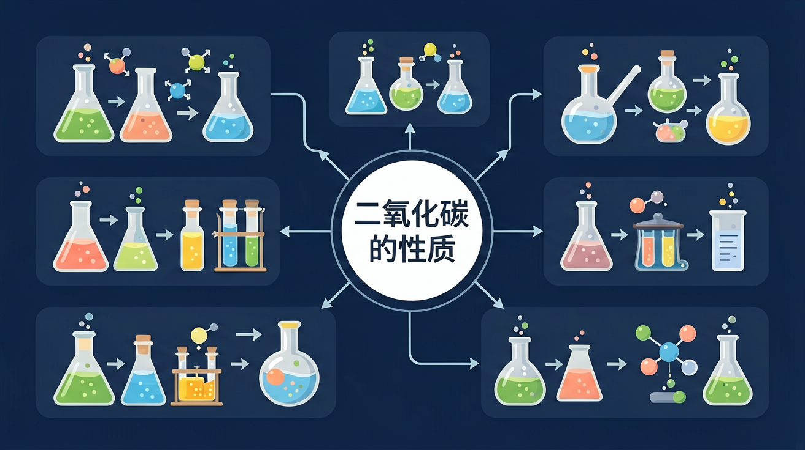
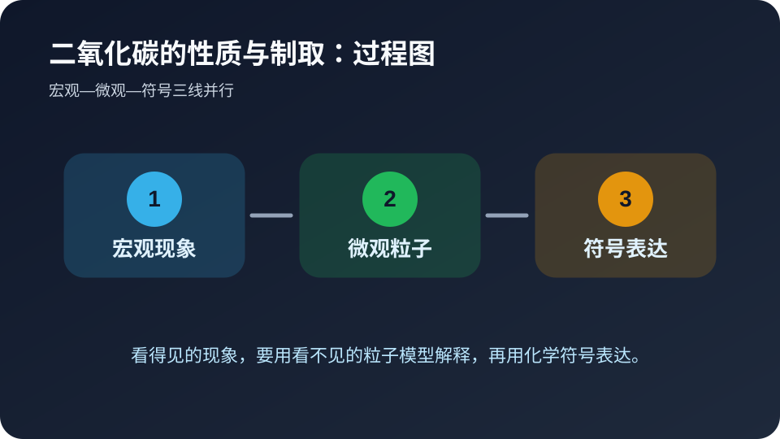

今天先解决二氧化碳的性质与制取里的哪个问题？
选择后，AI 学伴会围绕你的卡点给提示。
🎯 学习目标
- 能用自己的话解释二氧化碳的性质与制取的核心含义
- 能把二氧化碳的性质与制取和实验现象、微观粒子或化学符号联系起来
- 能识别二氧化碳的性质与制取相关的常见错误并完成迁移题
📝 前测：你已经知道什么？
下面哪种学习方式最符合化学学科特点？
🔍 核心讲解：二氧化碳的性质与制取 的专属解释
二氧化碳能使澄清石灰水变浑浊，也能使燃着木条熄灭。
二氧化碳不燃烧也不支持燃烧，能与石灰水反应生成碳酸钙沉淀。
证据来自石灰水变浑浊、密度较大和灭火实验。
深层理解：看见它是具体实验现象；拆开它要看 二氧化碳浓度、石灰水量、反应时间和收集方式；解释它要说明为什么；比较它要避开易错点；迁移它要换到新情境。
📘 核心概念模块：先把二氧化碳的性质与制取说清楚
二氧化碳不燃烧也不支持燃烧，能与石灰水反应生成碳酸钙沉淀。
这个模块只属于二氧化碳的性质与制取，因为它的关键证据是：证据来自石灰水变浑浊、密度较大和灭火实验。 本课把学习任务拆成三步：识别现象、说明机制、用符号或数据完成解释。
🧩 过程图：从现象到解释

看见现象只是第一步。真正的化学解释，需要把“颜色、气体、沉淀、温度”等宏观线索，转译成“粒子种类、粒子数目、粒子间作用或重新组合”等微观语言，最后再落到符号表达。
🧪 例题示范模块：用二氧化碳的性质与制取解释一道题
情境：实验室常用碳酸钙和稀盐酸制取二氧化碳。
作答路径：先写现象，再写与二氧化碳的性质与制取相关的机制，最后写证据或条件。不要只写结论，要写出“因为……所以……”的推理链。
🎯 ConcepTest 检查点：暴露一个常见误区
判断题：只要能说出二氧化碳的性质与制取的名称，就说明已经理解这个知识点。这个说法对吗？请先独立判断，再说明理由。正确思路是：名称只是入口，理解必须能解释现象、区分相近概念，并在新情境中迁移。
错因诊断：很多同学把“背过”误认为“会用”。遇到综合题时，一旦题目换成实验装置、生活材料或数据图表，就容易失分。解决办法是每学一个概念，都配一个现象、一个微观解释和一个符号表达。
🚀 迁移任务模块：自己设计一个解释

请用二氧化碳的性质与制取解释一个生活或实验情境，写出现象、微观/符号解释和条件变化后的结果。
🌐 外部仿真：PhET 物质状态
先自由探索，再回到本课互动区完成诊断任务。
🎛️ Canvas 真实互动：微观解释模拟器
拖动滑块，观察 二氧化碳浓度、石灰水量、反应时间和收集方式 如何影响结果。
🎬 微课讲解
这段微课讲解用于提示：化学学习要把可见现象和不可见粒子模型对应起来。
⚠️ 常见错误与错因诊断
把二氧化碳“有毒”和“不供呼吸”混为一谈。
只看表面现象，没写 二氧化碳浓度、石灰水量、反应时间和收集方式 中的关键条件。
现象要具体，机制要对应，证据要能检验。
✅ 后测：学会了吗？
⭐ 基础巩固：二氧化碳的性质与制取最重要的学习路径是什么？
⭐⭐ 能力应用：请用生活或实验场景解释二氧化碳的性质与制取。
⭐⭐⭐ 迁移挑战：设计一个小实验或判断题，验证你是否真正理解。